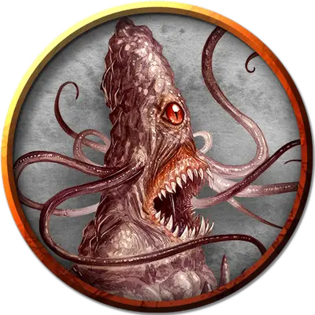

Веревочник перевёртыш
Shapechanged Roper
Большой Монстр, нейтрально-злой

Класс Доспеха 20 (природный доспех)
Хиты 93 (11к10 + 33)
Скорость 10 футов, лазая 10 футов
| мод | спас | ||
|---|---|---|---|
| СИЛ | 18 | +4 | +4 |
| ЛОВ | 8 | −1 | −1 |
| ТЕЛ | 17 | +3 | +3 |
| мод | спас | ||
|---|---|---|---|
| ИНТ | 7 | −2 | −2 |
| МДР | 16 | +3 | +3 |
| ХАР | 6 | −2 | −2 |
Навыки Восприятие +6, Скрытность +5
Чувства пассивное Восприятие 16, тёмное зрение 60 футов
Опасность 5 (1800 опыта)
Бонус мастерства +3
Особенности
Обманчивая внешность. Пока веревочник остается без движения, он неотличим от обычного пещерного образования, такого как сталагмит.
Хваткие усики. У веревочника может быть до шести усиков одновременно. Каждый усик можно атаковать (КД 20; 10 хитов; иммунитет к урону психической энергией и ядом). Уничтожение усика не причиняет урон веревочнику, который может в своем следующем ходу создать усик на замену уничтоженному. Усик также можно сломать, если существо действием совершит проверку Силы Сл 15 и преуспеет.
Паучье лазание. Веревочник может лазать по сложным поверхностям, включая потолки, без совершения проверок характеристик.
Перевертыш. Веревочник может действием превратиться в каменный объект или вернуться к своему истинному облику. Во всех обликах его характеристики остаются теми же самыми. Все несомое и носимое им снаряжение не превращается. Он принимает свой истинный облик, если умирает.
Обманчивая внешность (только в облике предмета). Пока веревочник остается без движения, он неотличим от обычного предмета.
Действия
Мультиатака. Веревочник совершает четыре атаки усиками, использует Подтаскивание и совершает одну атаку укусом.
Укус. Рукопашная атака оружием: +7 к попаданию, досягаемость 5 футов, одна цель. Попадание: 22 (4к8 + 4) колющего урона.
Усик. Рукопашная атака оружием: +7 к попаданию, досягаемость 50 футов, одно существо. Попадание: Цель становится схваченной (Сл высвобождения равна 15). Пока цель схвачена, она также опутана и совершает с помехой проверки Силы и спасброски Силы, а веревочник не может использовать этот усик против другой цели.
Подтаскивание. Веревочник подтаскивает всех схваченных существ на расстояние до 25 футов к себе.
Описание
Верёвочник откликается на имя Мигель. Ему даны инструкции атаковать любое входящее в комнату через зеркальные врата существо. Он также атакует любое существо, которое может причинить ему вред. Чтобы веревочнику не приходилось нападать из-за голода, Халастер регулярно его кормит.